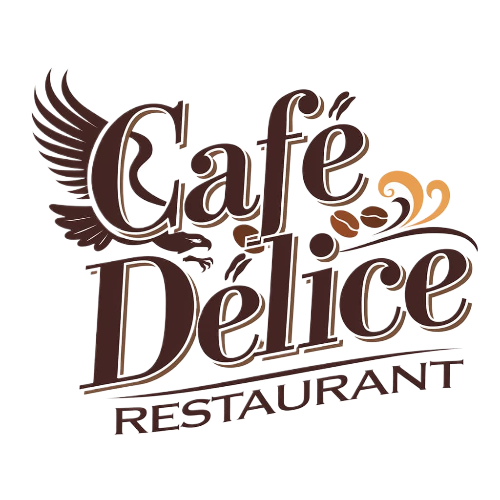

Bienvenue dans notre havre de saveurs et de convivialité, où chaque tasse et chaque assiette raconte une histoire pleine de goût et de chaleur. Installez-vous et laissez-vous charmer !
Bienvenue sur le site de Café Délice, votre espace numérique dédié à l'exploration de saveurs uniques et de moments de partage. Découvrez nos menus soigneusement élaborés, où chaque boisson et chaque plat est conçu pour éveiller vos sens et apporter une touche de douceur à votre journée.
Que vous soyez à la recherche d'un café artisanal, d'une pâtisserie délicate, ou d'un smoothie rafraîchissant, notre sélection saura répondre à vos envies. Laissez-vous également séduire par notre collection de produits exclusifs, allant des grains de café d'exception aux accessoires qui subliment votre expérience.
Chez Café Délice, chaque visite, virtuelle ou en personne, est une invitation à ralentir et savourer. Alors, prenez un moment pour explorer et laissez notre univers vous emporter.
123 Rue Exemple
12ᵉ Arrondissement, Littoral
Bénin
Téléphone : +229 123 456 789
Email : contact@votresite.com
Horaires d'ouverture :
Savourez l'instant, dégustez l'exception !